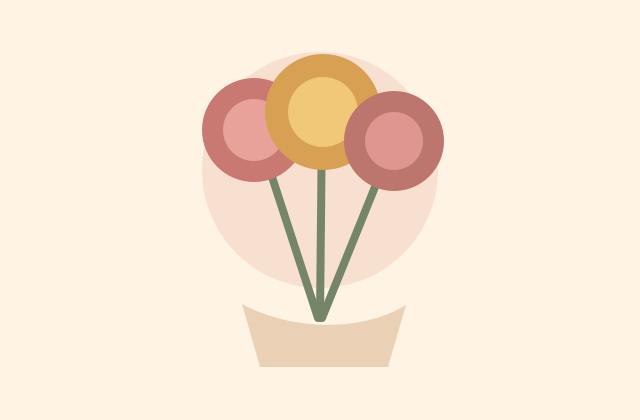

典藏紙藝花束
柔和花色與層次紙感，適合生日、紀念日與日常祝福。
About
唯藏紙藝文創相信，手作的溫度能讓祝福慢下來。每一片花瓣、每一道摺痕，都是為了讓送禮的人更安心，也讓收到的人感覺自己被珍重地放在心上。
我們以紙材、色彩與細緻工序創作不凋花束、節慶禮品與客製化作品，適合生日、婚禮、畢業、開幕與每一個想好好說出口的日子。
Collection

柔和花色與層次紙感，適合生日、紀念日與日常祝福。
將紙花、卡片與小物整合成完整禮盒，送出有儀式感的心意。

依照場合、色系與訊息設計，讓作品只屬於這一刻。
Contact
歡迎洽詢紙藝花束、禮盒與客製作品。可先提供用途、預算、希望色系與交件日期，我們會協助整理成最合適的作品方向。